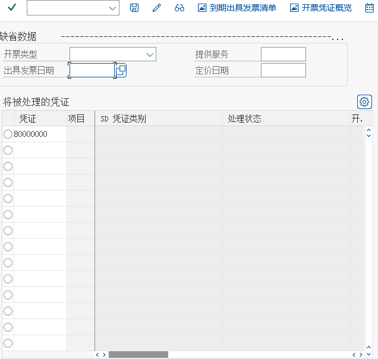
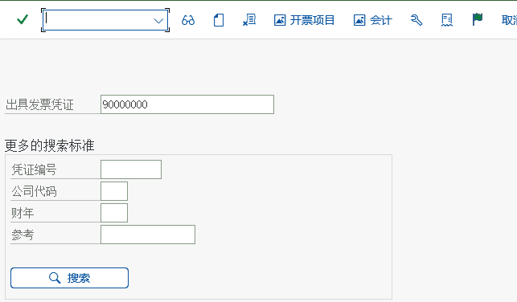

プロセス ③ 請求と財務への転記（部分詳解）
VF01 請求書登録 · VF02 転記（リリース）· 会計伝票 · 勘定設定 · 入金消込
1. 請求が解決すること
| 問題 | 請求はどう答えるか |
|---|---|
| いくらの金額を請求するか | 納入数量 × 条件価格で正味価額を計算し、さらに売上税を加算 |
| 誰に発行するか | 請求書送付先 / 支払先（パートナ役割） |
| いつ発行するか | 納入完了（出庫過転記）後。請求書日付と請求一覧（VF04）で一括処理できます |
| 財務上どう記録するか | 転記時に会計伝票を生成：借方 得意先未収 / 貸方 収益 + 売上税（勘定は勘定設定で導出） |
請求書と納入の関係納入を基準とする請求（Delivery-related billing）が最も一般的な方式です：請求書は納入を参照して登録し、請求数量は納入伝票の出庫済数量から来ます。受注伝票を基準にすること（受注関連請求）や、貸方伝票（返品/取消）を作成することもできます。教材のシナリオは「納入 → 請求 → リリース」という標準的な流れです。
2. 請求書の登録（VF01）
教材のメニューパス（請求伝票の登録）ロジスティクス → 販売管理 → 請求 → 請求伝票 → VF01-登録
原教材の中国語パス
后勤 → 销售和分销 → 出具发票 → 出具发票凭证 → VF01-创建{kind=link}


| 請求書画面の主要項目 | 意味 | 教材シナリオの値 |
|---|---|---|
| 伝票タイプ | 請求書タイプを決定（例：F2 請求書、G2 貸方伝票） | F2 |
| 請求書番号 | システムが番号範囲に従って生成する | 90000000 |
| 支払先 | 誰が支払うか（売掛金の対象を決定） | 10000000 |
| 請求書日付 | 転記日に関連する伝票日付 | 2021.04.15 |
| 正味価額 | 条件計算の結果（税抜か税込かは設定と条件によって異なります） | 960,000.00 RMB |
| 明細 / 品目 / 請求数量 | 納入伝票からの出荷済み数量 | 铸钢泵 170-230 / 120 PC / 品目 F999-100 |
請求画面の「缺失数据」のメッセージはエラーではありません教材タスク 43 の画面では、右側の「缺失数据」に請求タイプ、請求書日付など未入力の項目が一覧表示されます——これはシステムが必須項目をメッセージで示しているもので、入力後に保存すれば OK です。「缺失数据」と表示されても慌てず、1 項目ずつ補ってください。
これらの数値はどこから来たのか以上は教材環境の請求書画面に実際に表示される値です（当サイトが画面を確認済み）。あなたのシステムでは数値が必ず異なります。重要なのは項目間の関係です：請求数量は納入から来ます。正味価額は条件から、支払先は得意先マスタから取得します。
3. 財務会計への転記（リリース）VF02
請求書を保存しても SD の請求伝票が生成されるだけで、まだ転記されていません。財務会計へ渡すには「リリース」（Release to Accounting）が必要です。教材では VF02 で変更し、「旗アイコン」ボタンを押すと、画面下部に 「凭证已经传送到记账」 と表示されます。
{kind=link}



「リリース」という言葉を覚えましょう
保存 ≠ 転記。請求書は保存後のステータスが「未転記/リリース待ち」で、リリース後に初めて：
- 会計伝票を生成（FI）；
- 売掛金は得意先に計上されます（FBL5N で未消込項目を照会できます）。
- 請求ステータスは受注伝票と納入伝票に書き戻されます。
一括リリースには VF04（請求一覧）/ VF06 のバックグラウンドジョブが使えます。
4. 会計伝票はどうやって作られるか（勘定設定）
| 会計伝票の明細行 | 借方・貸方 | 金額の出所 | 勘定はどう決まるのか |
|---|---|---|---|
| 得意先売掛金 | 借方 | 請求書合計額（税込） | 支払先の照合勘定（得意先マスタ + 統制勘定の設定） |
| 販売収益 | 貸方 | 正味価額 | 勘定設定：勘定キー（計算スキーマの ERL）+ 品目の勘定割当グループ + 得意先の勘定割当グループ → VKOA |
| 売上税 | 貸方 | 税額 | 税コード（得意先の税分類 + 品目の税分類で決定）に対応する税勘定 |
「収益を別の勘定に記録したい」場合はどうするか3 つの方法：品目の勘定割当グループを変える（例：自製品 vs 取引商品）、得意先の勘定割当グループを変える、または計算スキーマの勘定キーを変更します。教材のシナリオでは前者を使っています：M1 自製品 / M2 取引商品 → 2つの収益勘定。
5. 伝票チェーン：「元伝票」をたどって受注伝票まで戻れる
教材のタスク 45「元伝票をクリック」は、このチェーン（請求書 → 納入 → 受注伝票）を検証するものです。これは SD で最も実用的な調査ツールです——得意先から「この請求書はどの受注伝票に対応するのか」と聞かれても、数回クリックするだけで答えられます。


6. 入金と消込（プロセスの一巡）
入金は FI の日常業務であり、SD のアクションではありませんが、業務上はプロセスがどこで終わるかを知っておく必要があります：
| アクション | T-code | 説明 |
|---|---|---|
| 得意先未消込項目の照会 | FBL5N | この請求書がまだ未消込で残っているかを見る |
| 入金と消込 | F-28 | 得意先、金額、銀行勘定を入力し、消し込む請求書にチェックを入れる |
| 自動入金（銀行明細） | FF67 など | 銀行明細の自動照合（設定による） |
| 督促 | F150 | 期日未払いの督促状を自動生成 |
教材の範囲に関する注意教材の SD の流れは「請求書転記（VF02）→ 原始凭证をクリック」までで、入金は実演していません。上記の入金部分は本コースが標準プロセスに沿って補ったもので、教材と混同しないようここに注記します。
7. 実機画面とセルフチェック

セルフチェックの質問
- 請求書を保存した後、なぜさらに「リリース」が必要なのですか？リリースしないとどうなりますか？
- 請求書の正味価額 960,000 はどう計算される？どのオブジェクトから値を取る？
- 「取引商品」と「自製品」で収益勘定を 2 つに分けたい場合、どこを変更しますか？
- 得意先が請求書を受け取っていないと言うとき、システムが発行済みであることを何で証明しますか？（伝票フロー + ステータス + 出力決定）
- 次ページ：分析とモニタリング —— レポートと伝票フローでチェーン全体を管理します。
- 実習タスク：タスク 4 請求と転記。